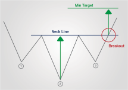
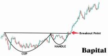

Condition for V20 strategy
- Applicable in V40, V40 next & V200
- Invest 3% of your portfolio in one trade
- There is no stop loss
- Use daily Candlestick chart
4 Steps in finding a V20 company (V40,V40 next)
-
There must be bunch of continuous green candles or a green candle and
the movement from lowest low till highest high should be more than 20%
- Draw a upper line and lower low line
-
Buy when the cmp touch the lowest low line price & Sell when the cmp
touch the upper high line price
- Average when the cmp is equal to that buying price
For V200 companies(Extra parameter from the above 4 steps)
- Moving Average [200 days]+ Above 4 steps
Jab lower low line ,200 days moving average line se Niche hu tu
tabhi hame uss range (20%) ku consider karna hai
candles with intraday line is valid or considered as valid candles
Rob Booker Knoxville Divergence
- Applicable only in V40 companies
- Invest 3% of your portfolio in one trade
- There is no stop loss
- Use daily Candlestick chart
change the indicator setting
Bars Back change from 150 to 200
RSI period change to 14
Momentum period same
Style color: blue
Steps in knoxville
- Uptrending line connecting top(green) to top
- Downtrending line connecting bottom(red) to bottom
- Size of line is not important
- Starting point is not important ,end point is important
-
End point of downtrending line is the buying signal (check the signal
after market close)
- End point of uptrending line is the selling signal
Moving Average Strategy
- Applicable only in V40 companies
- Invest 3% of your portfolio in one trade
- There is no stop loss
- Use daily Candlestick chart
use simple moving average
use SMA(50,100,200) indicator
200 days moving avg (color:black)
50 days moving avg (color:red)
20 days moving avg (color:green)
Style color: blue
Steps in moving avg strategy
Buying point-> 200 moving avg [Black line (top)]
|
50 moving avg [Red line]
|
20 moving avg [Green line]
|
Closing price [red/green candle(bottom)] buy point
Check after market close and buy next day morning
Selling point-> Closing price [red/green candle(top)] sell point
|
20 moving avg [Green line]
|
50 moving avg [Red line]
|
200 moving avg [Black line (bottom)]
Check after market close and sell next day morning
Reverse Head & Shoulder pattern
- Applicable in V40 & V40 Next companies
- Invest 3% of your portfolio in one trade
- There is no stop loss
- Use daily Candlestick chart

Steps in this Strategy
- There can be more than one shoulder in any side(left/right)
- Size of shoulder can be big or small
- use regular chart
-
Break out mean close above neckline (resistance with green candle line
on closing basis )
-
Breaking out confirmation -> closing above highest level of break out
candle & this candle must be green candle
- This pattern should not be at the lifetime high price
-
All the resistance should be at the same point(neckline should be
180o flat)
Cup with handle pattern
- Applicable in V40 & V40 Next companies
- Invest 3% of your portfolio in one trade
- There is no stop loss
- Use daily Candlestick chart

Steps in this Strategy
- There can be more than two handles in right side
- Size of cup must be bigger than handle
- use regular chart
- Complex pattern are much more reliable
- Can ignore intraday line while making resistance
3 times in 3 year
Steps in this strategy
-
The stock price should come down more than 67% from lifetime high
-
We must understand the reason of the fall (reasons can be less sales &
profit decrease)
- The reason of the fall should not exist anymore
-
There should be a proven track record of good performance in the past
- There should be an improvement in latest quarterly result
-
There should be good future growth prospect of the product or company
services
-
After meeting above six condition stock price should be down by 50%
from life time high
- We will buy after meeting these above condition
- If there is more than 100% gain in 12 months ,we will sell
-
If there i no 100% gain within 12 months we will sell at the lifetime
high